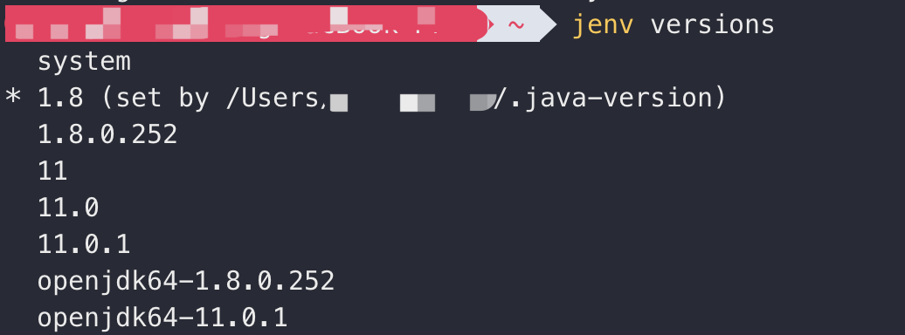
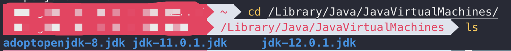
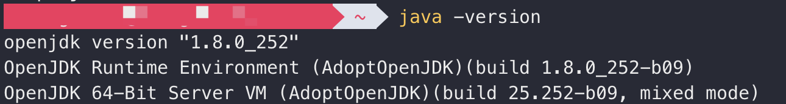
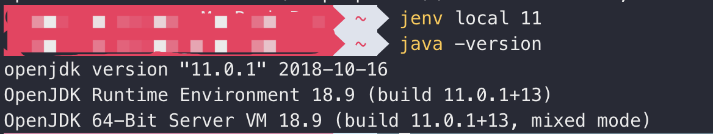

JDK版本切换确实是件头疼的事
使用jenv管理JDK版本
使用Homebrew下载
brew install jenv安装之后的配置
echo 'export PATH="$HOME/.jenv/bin:$PATH"' >> ~/.bash_profile echo 'eval "$(jenv init -)"' >> ~/.bash_profile使配置生效
source .bash_profile使用命令 jenv versions 可以查看当前所有版本

如图安装有1.8、11、openjdk几个版本，当前使用的是1.8
查看所有JDK的目录
cd /Library/Java/JavaVirtualMachines/
如图有8、11、12三个目录
添加JDK到jenv中
jenv add /System/Library/Java/JavaVirtualMachines/要添加的JDK/Contents/Home/根据要添加的JDK版本补全以上命令并执行
切换JDK版本
查看当前java版本
java -version
当前为1.8版本
切换到11版本
jenv local 11再次查看，发现已经切换成功了

本博客所有文章除特别声明外，均采用 CC BY-SA 3.0协议 。转载请注明出处！